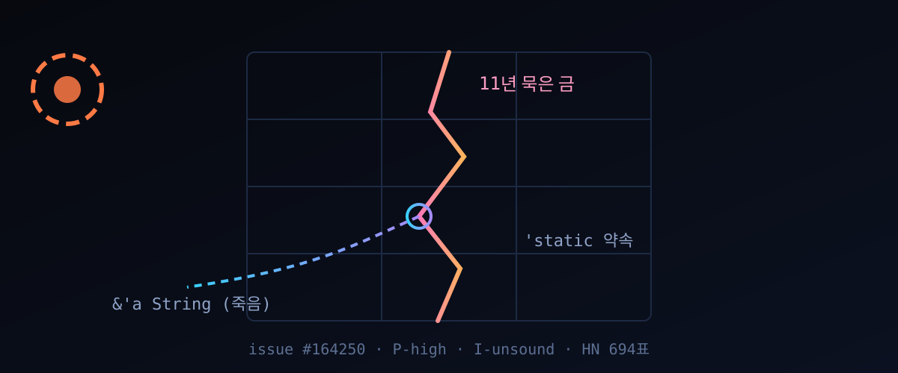

10/13 해커뉴스 694표 — 11년간 Rust가 못 잡은 '수명 구멍', 12줄 코드가 증명했다

세 줄 요약. ① rust-lang/rust 이슈 #164250이 10월 13일 해커뉴스 앞면에 올라 694표·댓글 386개를 쌓았다. 타입 시스템이 '여기는 평생 살아'라고 약속한 데이터를, 차입 검사기가 이미 죽은 참조로 채워 넣는 사고다. ② 열두 줄이면 재현된다. 관건은 단 하나: 타입 매개변수에 'static 수명을 강제하는 구조체에 짧은 수명을 넣는 대입을, 검사기가 공변이라는 이유로 눈감아 준다. ③ Rust 팀은 이 결함이 안정판 1.85 이전부터 — 결국 Rust의 11년 역사 대부분 — 잠들어 있었다고 확인했다. 조용했던 이유는 잔인할 만큼 단순하다. 실제로 엮이려면 일부러 악의적인 Drop 구현을 손으로 짜야 한다.
발단은 10월 13일(UTC) 개발자 jsnell이 올린 버그 리포트 한 장이다. 제목을 옮기면 이렇다 — 구조체가 요구하는 수명 조건이, 공변인 필드 대입 하나로 뚫린다. 사흘 만에 앞면 1위를 차지한 건 제목보다 코드가 먼저 읽혔기 때문이다. 열두 줄이면 재현되고, 컴파일을 통과하고, 실제로 죽은 문자열을 출력한다.
30초 요약
| 항목 | 내용 |
|---|---|
| 무슨 일 | rust-lang/rust 이슈 #164250. 'static 이상만 받으라는 구조체에 짧은 수명 참조를 넣는 대입을 차입 검사기가 허용한다. 열두 줄 예제로 재현, 10월 13일 해커뉴스 694표·댓글 386개 |
| 구멍의 구조 | ① 구조체 필드가 공변(내부 타입이 작아지는 걸 허용) ② 대입은 '지금'만 검사 ③ Drop 구현은 'static 약속을 철석같이 믿고 필드를 타입으로 감싼다 — 셋이 맞물려야 열린다 |
| 결과 | 사라진 지역 문자열의 참조가 KEPT 정적 벡터에 'static으로 보관되고, 이후 그 주소를 읽으면 asan이 stack-use-after-scope를 외친다. 예제는 죽은 줄 알았던 문자열을 아무렇지도 않게 출력한다 |
| 몇 년짜리 | 현재 나이틀리부터 안정판 1.85.0까지 재현 확인 — 그 아래로는 더 오래됐다는 뜻이다. 타입 팀은 "11년"을 공식으로 못 박았다 |
| 심각도 | P-high · I-unsound. P-critical이 아닌 이유를 타입 팀이 직접 해명했다: 11년 동안 아무도 못 밟았다는 사실이 곧 '잘 안 밟힌다'의 증거라는 것. 실제 메모리 사고로 이어지려면 고의적으로 악의적인 Drop 구현이 필요하다 |
| 내 일에도? | 커스텀 Drop을 손으로 쓴 적 없는 코드베이스라면 당장 위험은 낮다. 다만 '안전 Rust'라는 신뢰 자체에 금이 가는 종류다 |
1. 무엇이 터졌나
리포트 원문의 재현 코드를 옮겨 적는다 (rust-lang/rust 이슈 #164250 본문):
static KEPT: Mutex<Vec<Box<dyn Any + Send>>> = ...;
struct Q<T: 'static + Send>(Option<T>);
impl<T: 'static + Send> Drop for Q<T> {
fn drop(&mut self) { /* 필드를 KEPT에 Box로 밀어넣음 */ }
}
{
let l = String::from("...");
let mut q = Q(None);
q.0 = Some(&l); // 짧은 수명 &'a String 이 'static 칸에 들어간다
} // 여기서 l은 죽는다
// KEPT 에는 여전히 &'static String 이 살아 있다기대 동작은 "컴파일 거부"다. `Q
왜 하필 지금 드러났나 하는 물음엔 타입 팀 멤버 lcnr이 직접 메모로 답을 달아 놨다. 온라인에 퍼져 방문자가 몰린 탓에 부연설명을 붙였다는 것인데, 요지는 둘이다. 하나, 이건 경계 사례가 아니라 타입 시스템의 '기억 안전'이라는 약속 자체를 깨는 부류(I-unsound)다. 둘, 트래픽이 몰려 P-high로 낮춘 게 아니다 — 애초에 11년 묵이라 P-critical이 될 수 없었다는 변명 아닌 변명이다.
2. 왜 대단한가
① '안전 Rust'의 보증서가 시험대에 올랐다
Rust가 C/C++을 넘어서기 위해 내건 내기는 하나다: 컴파일만 통과하면 메모리 사고는 없다. 이 구멍은 그 보증서를 정면으로 건드린다. unsafe 없이, 표준 라이브러리의 Mutex와 Box만으로 죽은 참조를 만들어 낸다. HN 첫머리 댓글이 정서를 대변한다: "이런 제목 치고 비현실적으로 희귀한 별자리일 줄 알았는데, 최소 예제는 평범한 코드에서 곧잘 마주칠 만큼 단순하다." 실제로 화제가 된 건 코드보다 '1.0 이전부터 있었다'는 타임라인이다. Rust 1.0이 2015년 5월 — 11년이면 이 언어로 지어진 상당수 소프트웨어가 이 구멍 위에서 세워진 셈이다.
② 구멍의 모양이 특이하다: 검사기끼리 책임을 미룬 틈
차입 검사기(생존 기간 분석)와 변성 계산, 그리고 소멸자 semantics — 각각은 정상이지만 셋이 만나는 지점엔 규약이 없다. 공변은 원래 '작은 타입은 큰 타입 칸에 들어가도 된다'는 허용 규칙이고, 대입 검사도 스코프 단위로는 옳다. 소멸자도 자기가 받은 타입을 믿는 게 당연하다. 각자 자기 계약만 지킨 결과 전체 계약이 깨지는, 전형적인 '모서리에 떨어진 책임' 결함이다. 이슈에 붙은 레이블(A-lifetimes, A-variance, A-destructors, A-borrow-checker) 네 개가 그 자체로 책임자 목록이다. HN에는 검사기를 만져 봤다는 개발자가 "변성은 손으로 명시하는 일이 거의 없어서, 그쪽 버그는 10년씩 조용히 잠들어 있다"는 경험담을 남겼다.
③ 그럼에도 무너지지 않는 이유: '고의성'이라는 안전벨트
lcnr 해명 중 실무적으로 가장 중요한 문장: "일상 코드로 우연히 닿아 메모리 사고가 났을 가능성은 낮다." 실제로 엮이려면 타입 매개변수에 'static을 강제하면서 들어온 값을 형변환해 외부로 넘기는 Drop을 손수 짜야 한다. 피해자가 되려면 가해자 코드가 필요하다는 뜻이다. 사고 급으로는 낭보지만 철학적으로는 불편하다. '남이 짠 라이브러리의 Drop 안에서'라면 어떨까 — HN에서도 이 지점이 논쟁이 됐다. 악용이 의도적이어야 한다면 악의적 의존성 공급 공격의 새 표면이 되는 것 아니냐는 질문이다.
3. 바로 써먹기
내 프로젝트가 이 구멍에 서 있는지 확인하는 절차는 이렇다. 전제 조건이 좁으니 점검도 좁다.
# 1) 커스텀 Drop을 직접 구현한 곳이 있나 — 없으면 사실상 무죄
grep -rn "impl.*Drop for" src/
# 2) 그 Drop이 'static 등으로 수명을 강제하는 타입 매개변수를 갖나
# 3) 그 필드가 Option<T>처럼 공변 컨테이너이고 외부 대입으로 채워지나세 조건이 동시에 성립하는 타입이 드물다는 게 요점이다. 반대로 이 표는 '내가 Drop을 직접 쓸 일은 언제인가'를 되짚는 체크리스트다. 판정표로 쓰자.
| 당신 상황 | 판단 |
|---|---|
| Drop을 손으로 구현한 적 없는 애플리케이션 코드 | 당장 무관. 단 신규 의존성이 이 패턴을 쓸 수 있으니 잠정 안전으로 둘 것 |
| 'static 바운드가 있는 제네릭 컨테이너를 라이브러리로 배포 중 | 수사 대상 1순위. 대입으로 채워지는 public 필드라면 private으로 내려라 |
| 'static을 우회 수단으로 쓰는 관용구(TypeId 캐시, Any downcast 저장소) | 이 구멍과 무관하지만 같은 지형에서 산다. 구멍이 아니라 습관이 위험하다 |
| 임베디드·안전중요 등급 팀 | unsoundness 목록이 고정될 때까지 인증 보류가 정석. 지금이라면 Drop 금지 규약 하나가 값어치 있다 |
수정 방향은 커뮤니티에서 감이 잡힌 형태다. 대입 검사에서 선언 수명('static 바운드)을 현재 대입에 강제하거나, 소멸자 실행의 전제를 재점검하거나. 어느 쪽이든 타입 시스템의 근본을 다시 까는 작업이라 고정판까지는 시간이 걸린다. 그 사이 임시 안전장치는 관례 수준에 머문다.
4. 해외 반응 쟁점
스레드(댓글 386개)는 세 갈래였다. 첫째, '역시나'파 — 타입 시스템이 어렵다는 건 알았지만 이 정도일 줄은. counterexamples.org 와 Python 타입 구멍 모음(JelleZijlstra의 unsoundness 저장소)이 참고 링크로 소환됐고, "Lean 같은 형식 시스템은 임의의 수학까지 증명하지 않느냐"는 물음에 "언어 규격과 구현은 다르다"는 답이 달렸다. 둘째, '왜 11년'을 설명하는 실증파 — 시스템 쪽 Rust를 4년 썼는데 커스텀 Drop을 손으로 짠 적이 없다는 증언이 이 편에 섰다. 즉 '평범한 코드'라는 표현은 과장이고, 진짜 드문 조합이라는 것. 셋째, 공격 표면 경고파 — 이 조합을 평범해 보이는 의존성 하나에 심어 놓고, 내 타입이 'static을 믿는 순간 고의적 use-after-free가 완성된다. "발견된 뒤에는 악용될 수 있다. 필요한 건 그 케이스를 평범해 보이는 코드에 집어넣는 것뿐"이라는 댓글이 이 정서를 요약한다.
한국 개발자 커뮤니티에 아직 정식으로 옮겨진 해설이 없다는 점도 적어 둔다.
5. 마시기 전 주의
첫째, 이 글의 근거는 이슈 #164250 원문과 타입 팀의 메모, HN 스레드까지다. "11년"은 타입 팀 공식 표현이고, 재현 범위는 '최소 1.85.0까지'라는 리포트 문장을 그대로 옮긴 것이다 — 고대 판까지의 전수 검증은 아니다. 둘째, 구멍이 열려 있다는 것과 내 코드에서 열려 있다는 것은 다른 명제다. 커스텀 Drop이 없는 코드베이스에 오늘 밤 메모리 사고가 닥칠 확률은 0에 가깝다. 셋째, 수정 패치 일정 약속은 아직 없다. P-high는 우선순위이지 릴리스 노트가 아니다. 넷째, "asan이 잡아 준다"는 방어가 아니다 — 그건 이미 구멍을 아는 사람이 쓰는 안전장치다.
바로 가기
- 이슈 #164250 — 수명 조건이 공변 필드 대입으로 우회된다 (rust-lang/rust)
- Hacker News 스레드 — 694표·댓글 386개
- asan으로 stack-use-after-scope를 목격하는 godbolt 재현
같이 읽기
- Git 3의 SHA-256 전환 — '옳은 데이터 구조'를 12년 동안 못 뒤집은 사정, 같은 신뢰 문제의 다른 얼굴
- Deno이 사라지는 날 — 런타임이 회사에 흡수될 때 개발자가 잃는 것과 남기는 것